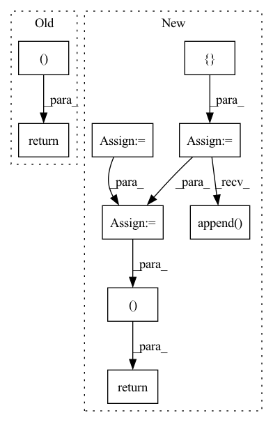

Pattern ID :2168
Before Change
x = up_conv(x, before_pool, se=self.wm_atts[i])
x_wm = x
return x_im,x_mask,x_wm
class CoarseDecoder(nn.Module):
def __init__(self, args, in_channels=512, out_channels=3, norm="bn",act=F.relu, depth=5, blocks=1, residual=True,
After Change
def forward(self, input):
// Encoder convs
im_encoder_outs = []
mask_encoder_outs = []
x = input
for i, d_conv in enumerate(self.down_convs):
// d_conv, attn = nets
x, before_pool = d_conv(x)
im_encoder_outs.append( before_pool)
mask_encoder_outs.append(before_pool)
x_im = x
x_mask = x
// Decoder convs
x = x_im
for i, nets in enumerate(zip(self.up_convs, self.up_im_atts)):
up_conv, attn = nets
before_pool = None
if im_encoder_outs is not None:
before_pool = im_encoder_outs[-(i+2)]
x = up_conv(x, before_pool,se=attn)
x_im = x
x = x_mask
for i, nets in enumerate(zip(self.up_convs, self.up_mask_atts)):
up_conv, attn = nets
before_pool = None
if mask_encoder_outs is not None:
before_pool = mask_encoder_outs[-(i+2)]
x = up_conv(x, before_pool, se = attn)
x_mask = x
return x_im, x_mask
class CoarseDecoder(nn.Module):
def __init__(self, args, in_channels=512, out_channels=3, norm="bn",act=F.relu, depth=5, blocks=1, residual=True,
In pattern: SUPERPATTERN
Frequency: 3
Non-data size: 9
Instances Fragment ID: 14077142
Project Name: bcmi/slbr-visible-watermark-removal
Commit Name: 43e84b70895d28955496122816e50857863e5bfd
Time: 2022-01-04
Author: lj200820082007@163.com
File Name: src/networks/resunet.py
M Class Name: SharedDecoder
N Class Name: SharedBottleNeck
M Method Name: forward(2)
N Method Name: forward(3)
M Parent Class: nn.Module
N Parent Class: nn.Module
M File Name: src/networks/resunet.py
N File Name: src/networks/resunet.py
M Start Line: 86
M End Line: 112
N Start Line: 84
N End Line: 114
Before Change
// reg_heads shape:[[B, 80, 80, 4],[B, 40, 40, 4],[B, 20, 20, 4],[B, 10, 10, 4],[B, 5, 5, 4]]
// center_heads shape:[[B, 80, 80, 1],[B, 40, 40, 1],[B, 20, 20, 1],[B, 10, 10, 1],[B, 5, 5, 1]]
return cls_heads, reg_heads, center_heads
def _fcos(arch, pretrained, progress, **kwargs):
model = FCOS(arch, **kwargs)After Change
def forward(self, inputs):
self.batch_size, _, _, _ = inputs.shape
device = inputs.device
[C3, C4, C5] = self.backbone(inputs)
del inputs
features = self.fpn([C3, C4, C5])
del C3, C4, C5
self.fpn_feature_sizes = []
cls_heads, reg_heads, center_heads = [], [], []
for feature, scale in zip(features, self.scales):
self.fpn_feature_sizes.append( [feature.shape[3], feature.shape[2]])
cls_outs = self.cls_head(feature)
// [N,num_classes,H,W] -> [N,H,W,num_classes]
cls_outs = cls_outs.permute(0, 2, 3, 1).contiguous()
cls_heads.append(cls_outs)
reg_outs, center_outs = self.regcenter_head(feature)
// [N,4,H,W] -> [N,H,W,4]
reg_outs = reg_outs.permute(0, 2, 3, 1).contiguous()
reg_outs = reg_outs * scale
reg_heads.append(reg_outs)
// [N,1,H,W] -> [N,H,W,1]
center_outs = center_outs.permute(0, 2, 3, 1).contiguous()
center_heads.append(center_outs)
del features
self.fpn_feature_sizes = torch.tensor(
self.fpn_feature_sizes).to(device)
batch_positions = self.positions(self.batch_size,
self.fpn_feature_sizes)
// if input size:[B,3,640,640]
// features shape:[[B, 256, 80, 80],[B, 256, 40, 40],[B, 256, 20, 20],[B, 256, 10, 10],[B, 256, 5, 5]]
// cls_heads shape:[[B, 80, 80, 80],[B, 40, 40, 80],[B, 20, 20, 80],[B, 10, 10, 80],[B, 5, 5, 80]]
// reg_heads shape:[[B, 80, 80, 4],[B, 40, 40, 4],[B, 20, 20, 4],[B, 10, 10, 4],[B, 5, 5, 4]]
// center_heads shape:[[B, 80, 80, 1],[B, 40, 40, 1],[B, 20, 20, 1],[B, 10, 10, 1],[B, 5, 5, 1]]
// batch_positions shape:[[B, 80, 80, 2],[B, 40, 40, 2],[B, 20, 20, 2],[B, 10, 10, 2],[B, 5, 5, 2]]
return cls_heads, reg_heads, center_heads, batch_positions
def _fcos(arch, pretrained, progress, **kwargs):
model = FCOS(arch, **kwargs) Fragment ID: 14077140
Project Name: zgcr/pytorch-imagenet-cifar-coco-voc-training
Commit Name: d271077f312fa0d2bf7456c3b5edc63e49aa3a39
Time: 2020-07-19
Author: zgcr@mail.ustc.edu.cn
File Name: public/detection/models/fcos.py
M Class Name: FCOS
N Class Name: FCOS
M Method Name: forward(2)
N Method Name: forward(2)
M Parent Class: nn.Module
N Parent Class: nn.Module
M File Name: public/detection/models/fcos.py
N File Name: public/detection/models/fcos.py
M Start Line: 109
M End Line: 109
N Start Line: 82
N End Line: 125
Before Change
next_mem, next_lmem = map(torch.stack, (next_mem, next_lmem))
next_mem, next_lmem = map(torch.detach, (next_mem, next_lmem))
return out, Memory(short = next_mem, long = next_lmem)
After Change
num_memory_layers = len(self.memory_layers)
init_mem = lambda: torch.empty(num_memory_layers, b, 0, d, **to(x))
mem = default(mem, init_mem)
lmem = default(lmem, init_mem)
mem_len, lmem_len = map(lambda t: t.shape[2], (mem, lmem))
total_len = mem_len + lmem_len + self.seq_len
pos_emb = self.pos_emb[:, (self.seq_len - t):total_len]
mem_iter, lmem_iter = map(iterate_tensor, (mem, lmem))
hiddens = []
for ind, (attn, ff) in enumerate(zip(self.attn_layers, self.ff_layers)):
layer_num = ind + 1
use_memory = layer_num in self.memory_layers
memories = map(next, (mem_iter, lmem_iter)) if use_memory else None
if use_memory:
hiddens.append( x)
x = attn(x, memories = memories, calc_memory = use_memory, input_mask = mask, pos_emb = pos_emb)
x = ff(x)
hiddens = torch.stack(hiddens)
out = self.to_logits(x)
// calculate next memory state
next_memory = self.memory_network(lmem, mem, hiddens)
return out, next_memory
Fragment ID: 14077136
Project Name: lucidrains/memory-transformer-xl
Commit Name: cbabe1ae6fa311092a9d0a88116c079a5ad8d790
Time: 2020-07-22
Author: lucidrains@gmail.com
File Name: memory_transformer_xl/memory_transformer_xl.py
M Class Name: MemoryTransformerXL
N Class Name: MemoryTransformerXL
M Method Name: forward(4)
N Method Name: forward(4)
M Parent Class: nn.Module
N Parent Class: nn.Module
M File Name: memory_transformer_xl/memory_transformer_xl.py
N File Name: memory_transformer_xl/memory_transformer_xl.py
M Start Line: 255
M End Line: 296
N Start Line: 306
N End Line: 345